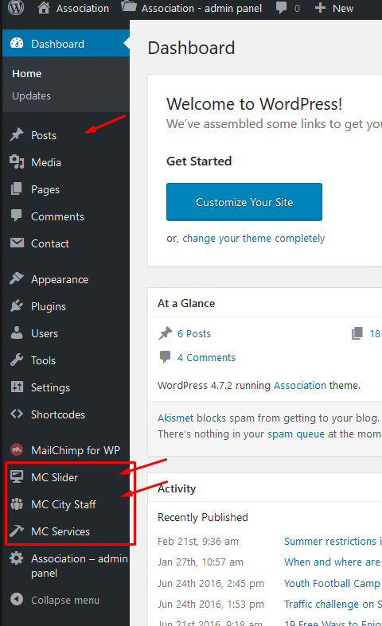
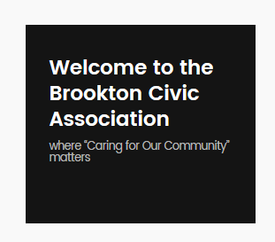
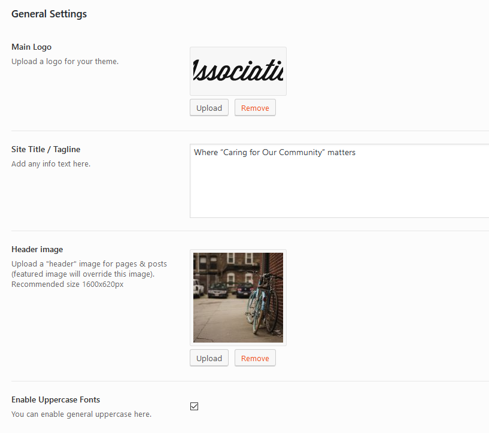
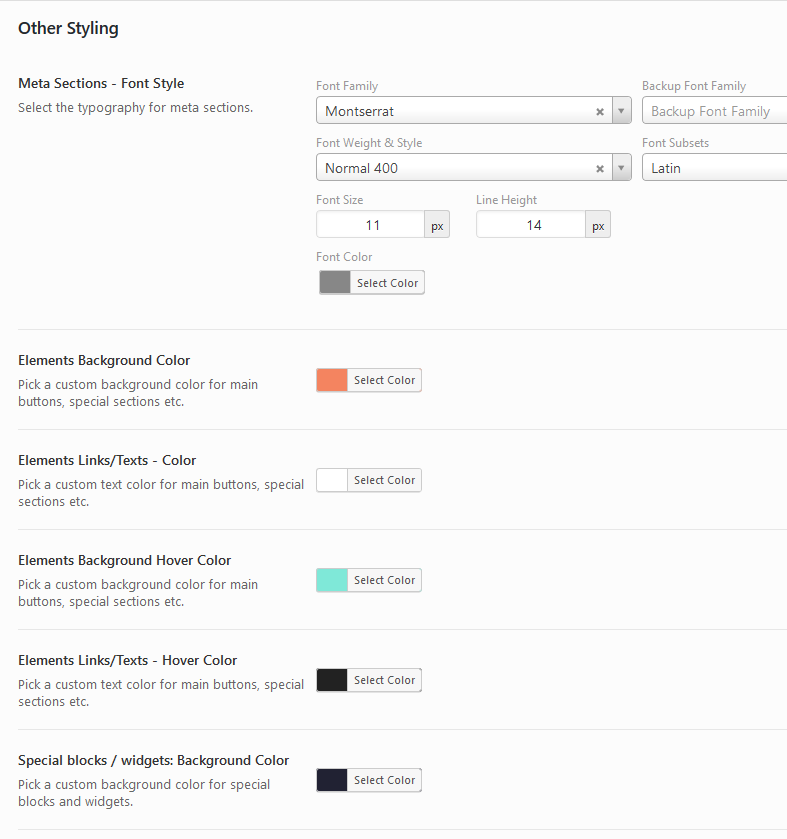

Association
Theme Documentation
Created: 22.02.2017
By: Dannci & Themnific
Support*: Dannci's Support Page
Our Portfolio
Hello there...
Thank you for purchasing my theme. If you have any questions that are beyond the scope of this help file, please feel free to contact me via Support page. Thanks so much!
* Please note, that theme support does not include:
- Customization and installation services
- Support for third party software and plug-ins
Theme Instalation - top
Installation via WP Dashboard:
- Unzip the main (downloaded) theme package – to get association.zip file,
- Go to Appearance >Themes,
- click on “Add New” > and “Upload theme”,
- click on ‘Browse’ button, find association.zip file on your computer and press 'Install Now',
- Activate theme,
- After theme activation go to Appearance > Install Plugins, and install and activate Redux Framework plugin!
- Refresh admin page and 'Association - admin panel' button will appear;
- Go to Association - admin panel (theme options) and setup theme.
Installation via FTP:
- Unzip the main (downloaded) theme package - twice - to get main theme folder: association,
- Using FTP client (e.g. Filezilla) upload association folder into 'themes' folder in your WordPress installation ( YOUR_HOSTING_ROOT/YOUR_SUBDIRECTORY/wp-content/themes/” ),
- Go to Appearance >Themes, find Association theme and activate theme,
- After theme activation go to Appearance > Install Plugins, and install and activate Redux Framework plugin!
- Refresh page and 'Association - admin panel' button will appear;
- Go to Association - admin panel (theme options) and setup theme.
You still need to install/activate other required or recommended plugins - you can do this by visiting Appearance » Install Plugins inside wp-admin.
Default Setup - top
1. After theme activation go to Appearance > Install Plugins, and install and activate Redux Framework plugin!
2. Refresh page and 'Association - admin panel' button will appear;
3. Then go to Association - admin panel
and hit "Save Changes" button to set default style settings:
You can change styling options later.
2. Following (or similar) message may be visible after theme activation:
Click on 'Begin activating plugins' link and install and activate 'Master City, 'Redux Framework' (if not installed yet) and 'Shortcode Ultimate' plugins.
You can install and activate these plugins in Appearance » Install Plugins too.
4. IMPORTANT! It is possible that after theme activation are images wrongly cropped and look ugly! In this case use following plugin: http://wordpress.org/extend/plugins/regenerate-thumbnails/ to regenerate old thumbnails (from previous theme).
After plugin installation start regeneration in Tools > Regen. Thumbnails.
This process can take a while and you cannot close tab/window until regeneration is done.
Homepage Setup - top
- In 'Pages' section create new page > name it 'Home'
- Select 'Builder' template for this page and save page:
- Go into Settings > Reading and created 'Home' page set as Static page > Front page,

- Empty homepage is created now! In next steps we'll create homepage content using 'Layout Creator'.
Layout Creator
Important!
I recommend to create few classic blog posts, MC Slider, MC Services and MC City Staff custom posts before you start creating templates in Layout Creator.
Set 'featured images' for all your posts.

Working in Layout Creator
- Go to Apperance > Layout Creator
- Create new 'template', name it e.g. 'Homepage content';
- Using Drag & Drop, drag 'Available Blocks' into template section.
- Start with 'Columns' blocks, these are important blocks to create basic page layout - skeleton:
You can create few columns combination; e.g.:
- 'Column' blocks combination is an empty skeleton of the page and
you can put other 'blocks' into columns to manage page content:
- Important!
- Don't use blocks marked as 'Full Width' in 'columns'
- after columns combination use 'Clear' block:
- Check out 'Blocks Screenshots' chapter, in this chapter are front-end screenshots of partial layout creator blocks.
- Using Drag & Drop create own layout:
Is Drag & Drop interface miserable? :(
See Tips & Tricks to working with Layout Creator as a pro. - If you are finished, click on "Save Template" button!
- Go to 'Home' page (created in previous steps) and using 'Add Template' button insert created 'layout creator' template:
- Save 'Home' page!
Blocks Screenshots
- News - block displays latest or featured blog posts (classic posts). Block can be used inside wide column.
- News: Minimal - block displays latest or featured blog posts (classic posts).
- Slider (Full Width) - block displays 'MC Slider' posts (custom posts).
Block can be used only as a "Full Width" (don't use block inside a column block). - Services - block displays latest or featured 'MC Services custom posts. Block can be used inside column blocks or in container as a "full width".
- Text & Divider** - You can use block to create nice and easy divider.
Add title and text (into 'Content' field); set colors for text and background or set background image. Block can be used inside both column blocks or in container.

back-end srceenshot:
back-end srceenshot:
- Text & Divider - Full Width:
You can use block to create nice and easy divider. Add title and text (into 'Content' field); set colors for text and background or set bg image. Block can be used only as a "Full Width" (don't use block inside a column block).
back-end srceenshot:
- Both Text & Divider blocks can output any shortcode. For example, you can output Events shortcode here:
back-end srceenshot:
- Call To Action block - paste any text into it and set 'button' label and target URL (link)
- Clear block - use this block to add additional (vertical) space between blocks. Here is screen shot from back-end (page builder)
Blog Template
- If you want to create 'blog' page, create empty page (Default template),
- name it 'Blog' (or similar),
- go to Settings > Reading and set this page as 'Post page'
- If you want to use 'Blog' template on the front page use default setting in Settings > Reading
Theme Setup - Admin panel - top
Theme comes with extensive options panel with functions divided to these sections:
General Settings:
- Upload your Main logo image,
- Add Site Tagline,
- Upload "header image"
- Enable/disable 'Uppercase' fonts.

Primary styling:
- Select font family with color, style and width of the font,
- Choose colors for typographic elements: body, containers (ghost color), text/links, hover, borders etc.,
- Add/paste your own custom CSS code
Header Styling & Settings:
- Select header layout (logo position),
- Set background color and color scheme for "Topnav" section,
- Set typography for main menu,
- Set color scheme for header,
- Set custom margins and width limitation for logo image.
- Set top margin for main menu.
Footer Styling:
- Select font family with color, style and weight for footer,
- Choose colors for typographic elements: footer background, text, links, hover, borders etc.,
Other Styling:
- Set font styling for 'Meta' sections (date, category etc. post information)
- Choose background color for elements (buttons, lines etc.),
- Select text/link color for elements (buttons, lines etc.),
- Set color scheme for image backgrounds.

Headings Typography:
- Select Font-family for all headings (h1- h6) and 'post titles',
- Select font weight for all headings (h1- h6) and 'post titles',
- Select Font-size for all headings (h1- h6) and 'post titles',
- Select font color for all headings (h1- h6) and 'post titles',
Post Settings:
- Turn On/Off partial post sections.
Social Networks Settings:
- Enter the full URL of social network, your profile or account (enter full URL: http:// or https:// including).
Custom Footer:
- Enable right custom footer and enter some text.
If you are finished click on "Save changes" button!
Custom Templates - top
- Create a page by going to Page > Add New.
- In Page Attributes section select custom page template (Builder, Full Width page etc.)
- Click the Publish button to publish your page.
Custom Widgets - top
Theme comes with few custom widgets (marked as "Themnific").
Go to Appearance > Widgets and setup your sidebar and footer widget areas. Widgets are very easy to setup. Just follow and set partial widgets fields.
Used Widgets
Following widgets are used in theme demo:
As you can see, in theme demo are used custom widgets which come with 3dr party plugins (Twitter, Events etc.).
Please see 'Plugins' chapter for more info about these plugins.
Images - top
IMPORTANT! It is possible that after theme activation are images wrongly cropped and look ugly!
In this case use this plugin: http://wordpress.org/extend/plugins/regenerate-thumbnails/ to regenerate old thumbnails from previous theme.
After plugin installation start regeneration in Tools > Regen. Thumbnails This process can take a while and you cannot close tab/window until regeneration is done.
Featured Images:
- Images and thumbnails are generated automatically. To display thumbnails correctly upload images via WP interface using "Use as featured image" button
- after image upload set featured image.

Featured Images - Minimal Sizes
- 'Slider' block : 1600x620px;
- Classic blog posts: 299x225px;
- MC Services (custom posts): 353x197px.
Galleries: Native (grid) gallery
- If you want to create post with gallery, you need to create classic wp gallery
- Classic wp gallery has 'grid' layout (styling) with lightbox image preview (if 'link to media file' is selected).
- You can enable/create Tiled Gallery when you install 'Tiled Galleries Carousel Without Jetpack' plugin:
Post Settings & Post Formats - top
Post Settings:
In post add/edit screen is located custom 'Themnific Post Options' tab.
You can setup "formats" (video, gallery etc.) and custom ads in this tab.
- select post sidebar location,
- disable featured image (applied only for 'Classic' image size)
Theme comes with these posts formats (Format tab):
Standard post
Default (native) WordPress post.
Video post
Check 'Video' option in the Format tab and enter plain video link into Video URL field:
Audio post
Check 'Audio' post in the Format tab and paste Soundcloud URL into post content and save post...
Gallery post
Check 'Gallery' post in the Format tab and create wp gallery (see: images section)
Link post
Check 'Link' post in the Format tab and add any URL into Link field.

- Ad Section: paste full URL of image banner and full URL of ad target
Custom Posts - top
Slider posts
Association theme (+ installed Master City plugin) comes with 'MC Slider' custom posts. Function is to create simple image slider:
You can access and create these custom posts in main dashboard menu:
Slider posts types are similar / work similar to classic posts. You can set post title, add slide content, featured image and sort/list these posts into own categories.
Usage is very simple, in Layout Creator use 'Slider (Full Width)' block to display these custom posts.
Info posts
Association theme (+ installed Master City plugin) comes with 'MC Services' custom posts. Their function is to create simple "image navigation / hub", like here:
You can access and create these custom posts in main dashboard menu:
Info posts types are similar / work similar to classic posts. You can set post title, target URL (link), featured image and sort/list these posts into own categories.
Usage is very simple, in Layout Creator use 'Info (Navigation) Posts' block to display these custom posts.
City Staff posts
Association theme (+ installed Master City plugin) comes with 'MC City Staff' custom posts. Function is to create simple staff overview:
You can access and create these custom posts in main dashboard menu:
City Staff posts types are similar / work similar to classic posts. You can set post title, add small plain text info into content, featured image and sort/list these posts into own categories.
Usage is very simple, in any page use dedicated shortcodes to display staff posts:
Add shortcode in following format:
[mc-staff category="XXX" posts="4" columns="2"]
You need to replace XXX with 'category slug'; e.g. [mc-staff category="city-council" posts="4" columns="2"] shortcode shows 4 latest posts listed in 'City Council' category in a 2 column layout.
Custom Menu : - top
! Create own custom menus first! Please see following tutorial !
Custom menu (in sidebar)
1. Create another custom menu (in Appearance > Menus) and add any pages / links into it.
2. go into Appearance > Widgets and using 'Custom Menu' widget display this menu in Sidebar (Pages); (current page will be highlighted).
Colored Menu Item (on the right)
1. Toggle 'Screen Options' on the top of the menu screen:
2. Enable 'CSS Classes' option:
3. Toggle any menu item and type special word into Css Classes field
Menu Icons
1. Before (or after) menu label add this piece of code
<i class="fa XXX"></i>
Enter full icon code - 'fa' class is required.
2. For XXX you can set any icon name. You can find all icon names on Font Awesome homepage.
3. You can see how-to video here. It is not tutorial for my theme but the process is the same.
Font Awesome - Update (optional)
1. Download latest Font Awesome package.
2. In downloaded file is 'font' folder with 4 font files (.eot, .svg, .ttf, .woff)


3. Upload all these font files into 'fonts' folder (located in main theme folder) on your server.
4. Upload css files (font stylesheets) to 'styles' folder on your server.
Required Plugins - top
After theme activation will be following notice visible in wp dashboard:
Click on 'Begin activating plugin' link and install and activate Master Magazine, Redux Framework plugin and Shortcodes Ultimate plugin.
Redux Framework
After plugin activation is possible to change different theme options in theme admin panel
Master City
1. Plugin also adds whole 'Layout Creator' functionality to this theme.
2. After plugin activation is possible to create MC Slider, MC Info and MC Staff mini-posts:
and output these mini-posts using using Layout Creator blocks.
Shortcodes Ultimate
You can generate different shortcodes using 'Insert shortcode' button in all Post/Page screens:
After plugin activation will be visible following notice; you can ignore this message:
Other Plugins: - top
Recent Tweets Widget
Theme is compatible with Recent Tweets Widget plugin. Plugin is used in demo site.
In search field (Plugins > Add New) insert 'Recent Tweets Widget' and Install plugin.
Plugin widget can be set in Appearance > Widegts:
Note!: You need to get "consumer and secret" codes for Themnific - Recent Tweets' widget:
- Go to https://dev.twitter.com/apps/new and log in, if necessary
- Enter your Application Name, Description and your website address. You can leave the callback URL empty.
- Accept the TOS, and solve the CAPTCHA.
- Submit the form by clicking the Create your Twitter Application
- Copy the consumer key (API key) and consumer secret from the screen into widget fields
Contact Form 7
Plugin page: Plugin Homepage
Into search field (in Plugins > Add New) insert 'Contact Form 7' and Install this plugin
You can create own contact form(s) in main wp menu > Contact.
You can display created 'contact form' on any page using shortcode:
In demo is used contact form with following custom markup: http://pastebin.com/jHT9bj3N
'Get Involved' page uses another contact form with this markup: http://pastebin.com/tL2M2PMQ
Please read plugin documetation for more info about this very flexible plugin.
Tiled Galleries Carousel Without Jetpack
In search field (Plugins > Add New) insert 'Tiled Galleries Carousel Without Jetpack' and Install this plugin.
Tiled gallery styling can be set in 'Add / Edit Gallery' screen directly:
AddToAny
Plugin page: Plugin Homepage
Into search field (in Plugins > Add New) insert 'AddToAny' and Install this plugin.
Plugin can be set in Settings > Cocorico Social:
Theme is compatible with Simple Share Buttons Adder too.
MailChimp for WordPress
You can easily create newsletter subscribe form with 'MailChimp for WordPress' Plugin: Plugin Homepage
Into search field (in Plugins > Add New) insert 'MailChimp for WordPress' and Install this plugin
Plugin can be set in Settings > Video Thumbnails:
In demo is used subscribe form with following markup: http://pastebin.com/K5bGtauT
Simple Event Planner
You can easily create events with 'Simple Event Planner' Plugin: Plugin Homepage
In search field (Plugins > Add New) insert 'Simple Event Planner' and Install this plugin
a) Plugin can be set in Event Planner > Settings:
b) In Event Panner > Add New create new event post which work similar to classic posts: add title, text, featured image and fill event options (date/time/address etc.)
c) you can display created evets on any page using shortcodes:
[event_listing events_layout="list"]
[event_listing events_layout="list" search="false"]
[event_listing events_layout="grid"]
[event_listing events_layout="grid" search="false"]
More info about plugin: https://wordpress.org/plugins/simple-event-planner/faq/
Demo Content (XML file) - top
Make sure that Association theme is installed and activated;
and 'Master City' and 'Contact Form 7' plugins are installed and activated before XML import!
If you want to import Events activate 'Simple Event Planner' plugin too.
- In main theme package (downloaded from http://themeforest.net/downloads) is attached XML file. Unzip this XML file.
- Go to Tools > Import; install and activate 'WordPress Importer' plugin,
- Find XML file on your computer and import XML file.
- Check "Download and import file attachments" option.
- XML file is bit bigger and sometimes (slow server etc.) needs to be imported more times (until 'Have Fun' message is shown).
After XML file import:
- set 'Home' page (with 'Builder' template) as front page (in Settings > Reading);
- edit 'Home' page and select 'Layout Creator' template you want to use on the front page (using 'Add Template' button),
- adjust/edit 'Layout Creator' template if you want (in Appearance > Layout Creator)
- save imported custom menus for 'locations' (in Appearance > Menus);
- set own color and typography schemes in Association admin panel.
- footer and sidebar widgets can be set in Appearance > Widgets. In demo are used these widgets:
Important!
Due licenses all imported images are for testing purposes only and cannot be used on your live website!!!
You can download free photos for your commercial & personal works on sites like:
http://picjumbo.com/
http://pixabay.com/
https://unsplash.com/grid
Translation - top
This theme is translation/localization ready and comes with association.pot file. File is located in 'lang' folder.
- You need to use localized WordPress installation (core): WordPress in Your Language.
If not localization will be not successful. - Download poedit software here,
- Install it and in this software translate association.pot file (line by line),
- Once you have translated all the strings, you can save this as your .po file.
The filename of your .po / .mo file is crucial! Gettext uses the ISO 639 standard for language abbreviations and ISO 3166 for locales. If your translation is written in deutsch for example, your file name will look like de_DE.po. Capitalization is also important here. For a full list of language and country codes, check out these two links:
Once you save, POEdit by default automatically creates a .mo file alongside your .po file. Put these files into 'lang' folder.
- Access your wp-config.php file found in your WordPress' root folder. Your file should already contain define('WPLANG', ''); but if it does not, you can add it in. You simply need to add your language and locale code into the define. If you were to translate your theme into German, you would have this:
define('WPLANG', 'de_DE');
Your internationalization is complete!
Once again, thank you so much for purchasing this theme.